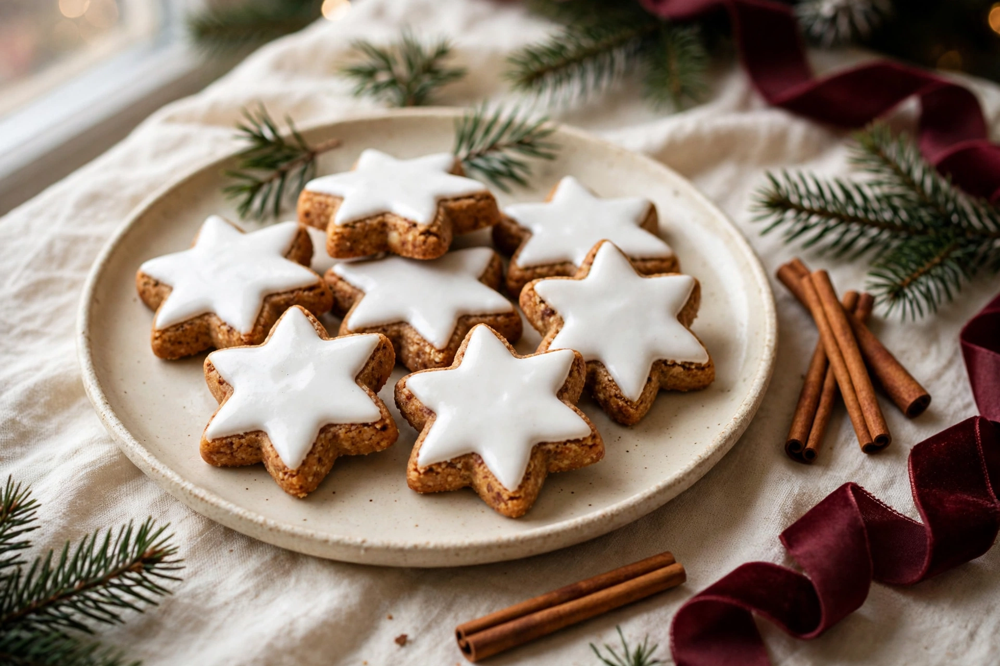
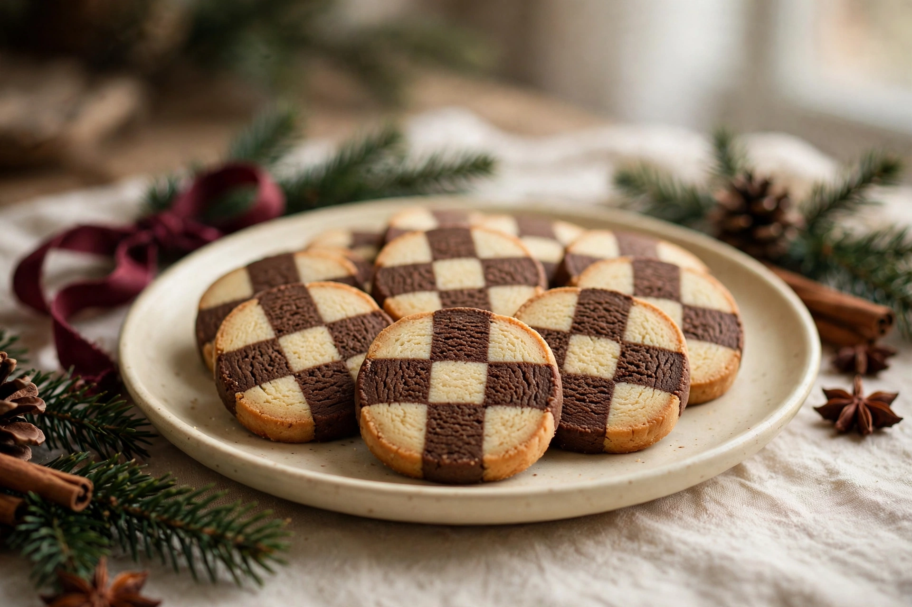
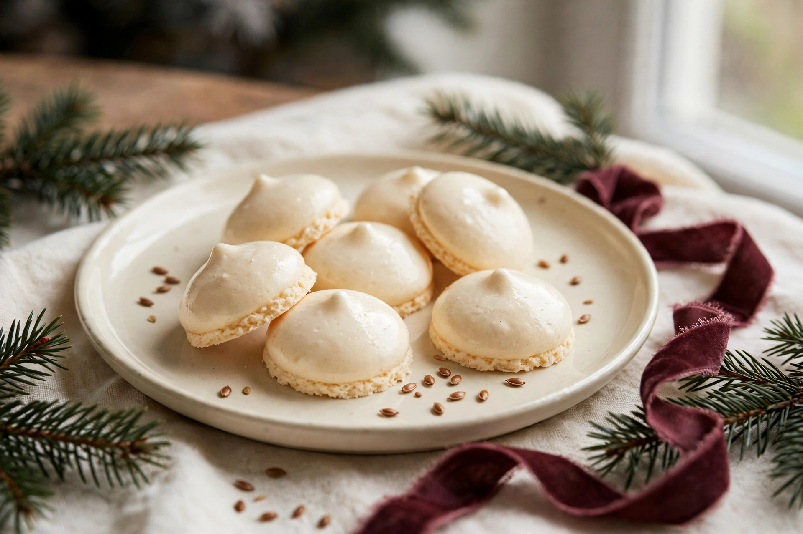
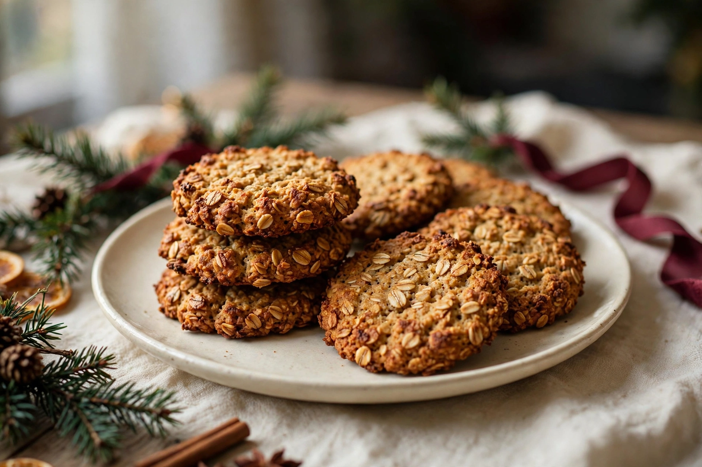

Home › Cookies
Cookie Recipes
Whether Vanillekipferl, Zimtsterne or cut-out butter cookies: here you will find the most popular cookie recipes – simply explained, reliable and tested by Anna.
 Top 10
Top 10The 10 Best Christmas Cookie Recipes 2026
Our most popular Christmas cookies in one collection.
 Classic
ClassicVanillekipferl, Just Like Grandma's
The classic recipe: tender, crumbly and irresistibly vanilla.

ClassicMake Your Own Zimtsterne
The Christmas classic with a moist center and white glaze.
 Basic recipe
Basic recipeButter Cookies for Cutting Out
The basic recipe for the whole family – perfect for decorating.
 Classic
ClassicSpritzgebäck (Piped Butter Cookies)
Delicate piped butter cookies belong in every well-filled cookie tin.
 Quick & easy
Quick & easyKokosmakronen (Coconut Macaroons)
Crisp at the edges, wonderfully moist inside: coconut macaroons need only a handful of ingredients and are …
 With jelly
With jellySpitzbuben (Jam Sandwich Cookies)
Two tender shortcrust cookies with fruity redcurrant jelly in between: these jam sandwich cookies are the …
 With nuts
With nutsEngelsaugen (Thumbprint Cookies)
Little nutty cookies with a jewel of jelly in the middle – thumbprint cookies, called Engelsaugen …
 Extra crumbly
Extra crumblyHeidesand (Brown Butter Shortbread Slices)
Their secret is browned butter: these slice-and-bake shortbread cookies taste delicately of caramel, are …

Eye-catcherSchwarz-Weiß-Gebäck (Checkerboard Cookies)
Checkerboard, pinwheel or stripes: one light and one dark dough create the most beautiful patterns – …
 Frankfurt classic
Frankfurt classicBethmännchen (Marzipan Almond Balls)
This Frankfurt specialty made of marzipan traditionally carries three almond halves – and is surprisingly …
 Spiced
SpicedPfeffernüsse (Spiced Pepper Nut Cookies)
Small, round and full of warm spice: pepper nuts get their special note from honey, gingerbread spice and …
 Spiced cookies
Spiced cookiesSpekulatius (Spiced Speculoos Cookies)
Crisp, thin and full of warm spices: speculoos tastes of cinnamon, cloves and cardamom.
 With honey
With honeyWeiche Lebkuchen (Soft Gingerbread Rounds)
Moist, soft gingerbread rounds just like at the Christmas market – with honey, brown sugar and plenty of …
 Nuremberg style
Nuremberg styleElisenlebkuchen (Nuremberg Flourless Lebkuchen)
The queens among gingerbread: made entirely without flour, packed with almonds, hazelnuts and spices, …
 Mini stollen
Mini stollenStollenkonfekt (Mini Stollen Bites)
All the flavor of Christmas stollen in miniature: moist quark-dough bites with raisins and almonds, rolled …

With little feetAnisplätzchen (Anise Cookies)
These little relatives of springerle grow their typical 'little feet' in the oven and keep a firm cap.
 Melt-in-the-mouth
Melt-in-the-mouthSchneeflöckchen (Melt-in-the-Mouth Snowballs)
These cookies truly melt on your tongue: cornstarch makes them incredibly tender.
 With walnut
With walnutWalnussplätzchen (Walnut Cookies)
Buttery shortcrust with ground walnuts and a walnut half as a crown – rustic, nutty and not too sweet.
 With chocolate tips
With chocolate tipsMandelhörnchen (Almond Crescents)
Moist marzipan crescents rolled in sliced almonds, their tips dipped in dark chocolate – just like from a …

CrispHaferflockenplätzchen (Crisp Oatmeal Cookies)
Golden brown, crisp and warmly spiced with cinnamon: these cookies come together in no time and taste …
Egg-freeCookies Without Egg – 5 Recipes
No egg in the house? These 5 recipes still turn out perfectly.
Anna's Cookie Tip
The best cookies are made without rushing: always chill the dough well, never set the oven too hot, and only open the tin once the cookies have cooled completely. That way they stay tender and delicious for weeks.
More about AnnaAnna's Bookshelf
Some recipes are not on any blog, but in the baking books that have accompanied Anna for years. In the new Cookbooks section she introduces her favorite baking books – from the classic "Backen macht Freude" to the vegan baking school.
To the cookbooks